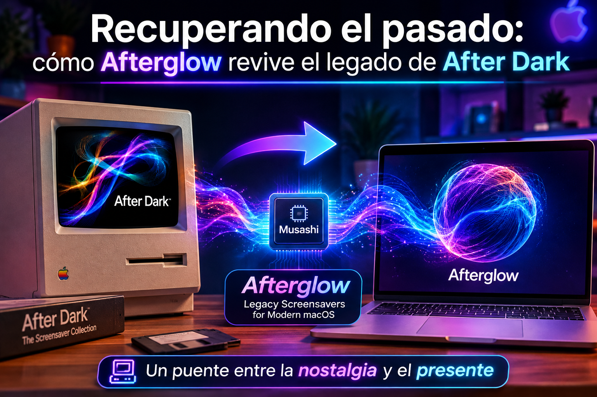

Tecnologia
Recuperando el pasado: cómo Afterglow revive el legado de After Dark
Un proyecto de preservación de software antiguo permite ejecutar el mÃtico salvapantallas After Dark en Macs actuales
ACTUALIDAD TECNOLÓGICA
Hardware, software, redes, dispositivos y servicios digitales. Información seleccionada para entender qué ocurrió y qué cambia para el usuario.

Un proyecto de preservación de software antiguo permite ejecutar el mÃtico salvapantallas After Dark en Macs actuales

La población mundial podrÃa alcanzar su máximo y comenzar a disminuir en el futuro cercano

Los millennials en Europa Central rechazan ascensos por razones que sorprenden a sus jefes del baby boom

Internet ha cambiado significativamente desde su lanzamiento en 2005